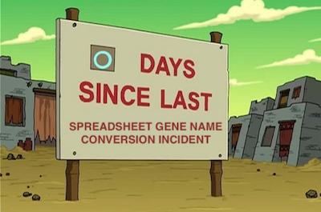

vignettes/index.Rmd
index.RmdPhysicians and biologists like gene symbols and bioinformaticians hate’em. Why? For one thing, they change constantly and are given new names or aliases. For another, some get munged into dates when imported into spreadsheet programs - and not only Excel (Thank you @karawoo for the picture!):

Myself (Levi speaking), I don’t mind them. It’s way easier to remember TP53 than to remember 7157 or ENSG00000141510. They’re a fact of life. So Markus Riester and I wrote HGNChelper to make them a little more pleasant to bioinformaticians.
HGNChelper has several functions that seemed useful back in the day when we first wrote it, but really one has withstood the test of time and remained useful:
checkGeneSymbols(x, unmapped.as.na = TRUE, map = NULL, species = "human")
checkGeneSymbols identifies HGNC human or MGI mouse gene symbols which are outdated or may have been mogrified by Excel or other spreadsheet programs. It returns a data.frame of the same number of rows as the input, with a second column indicating whether the symbols are valid and a third column with a corrected gene list.
library(HGNChelper) human = c("FN1", "tp53", "UNKNOWNGENE","7-Sep", "9/7", "1-Mar", "Oct4", "4-Oct", "OCT4-PG4", "C19ORF71", "C19orf71") checkGeneSymbols(human) #> Maps last updated on: Fri Sep 11 22:21:00 2020 #> Warning in checkGeneSymbols(human): Human gene symbols should be all upper- #> case except for the 'orf' in open reading frames. The case of some letters was #> corrected. #> Warning in checkGeneSymbols(human): x contains non-approved gene symbols #> x Approved Suggested.Symbol #> 1 FN1 TRUE FN1 #> 2 tp53 FALSE TP53 #> 3 UNKNOWNGENE FALSE <NA> #> 4 7-Sep FALSE SEPTIN7 #> 5 9/7 FALSE SEPTIN7 #> 6 1-Mar FALSE MTARC1 /// MARCHF1 #> 7 Oct4 FALSE POU5F1 #> 8 4-Oct FALSE POU5F1 #> 9 OCT4-PG4 FALSE POU5F1P4 #> 10 C19ORF71 FALSE C19orf71 #> 11 C19orf71 TRUE C19orf71
As you see, it even helps fix capitalization. How does it fix those Excel dates? I imported a column of all human gene symbols into Excel, then exported using a whole bunch of available date formats. Then I kept any that differed from the originals for HGNChelper’s map.
Mouse genes work the same way, but you need to specify the argument species=mouse:
checkGeneSymbols(c("1-Feb", "Pzp", "A2m", "E430008G22Rik"), species="mouse") #> Maps last updated on: Fri Sep 11 22:21:00 2020 #> Warning in checkGeneSymbols(c("1-Feb", "Pzp", "A2m", "E430008G22Rik"), species = #> "mouse"): x contains non-approved gene symbols #> x Approved Suggested.Symbol #> 1 1-Feb FALSE Feb1 #> 2 Pzp TRUE Pzp #> 3 A2m TRUE A2m #> 4 E430008G22Rik FALSE <NA>
Mouse gene symbols containing any capital letter, except the first character, can not be fixed. For example, ‘E430008G22Rik’ is a symbol for Abl1 gene, but we couldn’t fix it. Suggestions welcome about how to build a more complete map of valid symbols. To be on the safe side, you could set unmapped.as.na = FALSE to keep unrecognized symbols as-is and only correct ones that have a definitive correction.
HGNChelper does the following corrections:
Numbers 2 and 3 are done by comparing to a complete map of both valid and invalid but mappable symbols, shipped with HGNChelper:
These are a combination of manually generated Excel mogrifications that remain constant, and aliases that can become out of date with time.
Gene symbols are aliased much more frequently than I can update this package, like every day. If you want the most current maps of aliases, you can either:
getCurrentHumanMap() or getCurrentMouseMap() function, and provide the returned result through the map= argument of checkGeneSymbols(), orPlease report any issues at https://github.com/waldronlab/HGNChelper/issues